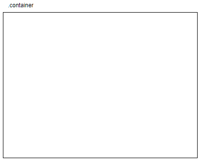
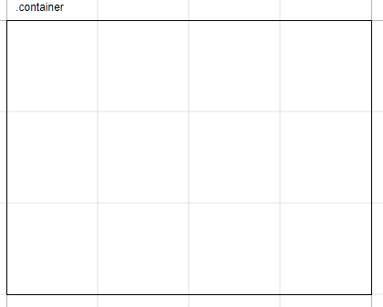
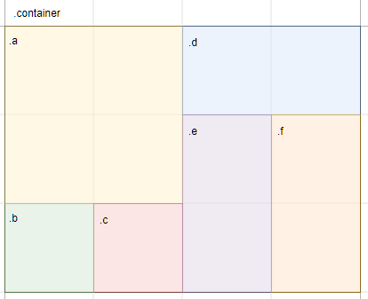
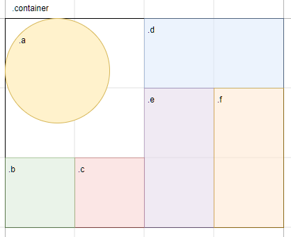

在練習寫網頁的過程中，難免會有偷瞄別人的作品的時候。有時會看到「這次練習一下 Grid 排版」之類的註解，但一直只知道 Bootstrap 是以格線系統為主，而沒有實際去了解過相關的知識。
最近看到有人大推 CSS Grid ，不禁覺得很好奇，於是就來好好了解一番。
什麼是 CSS Grid
CSS Grid 是以格線為基礎的佈局系統，用欄列取代 float 或 position 的排版方式。
Grid 與 Flex 的差異是，Flex 只能針對一個維度來排版， Grid 則是針對兩個維度。
目前大部分的瀏覽器都有支援 Grid 。
基本佈局
我們可以想像 Grid 的排版方式就像在方格紙（作筆記的那種）上畫格子一樣。
所以大概有三個步驟：
- 拿張紙
- 印方格
- 畫格子
拿張紙
就像使用 canvas 或 flex 一樣，我們要先指定想要在哪塊地方使用 grid ，也就是指定 grid 的外部容器。
1 | <!-- 就決定是你了！ --> |
1 | .container{ |

印方格
方格筆記紙之所以好用，是因為我們可以決定我們寫一個字上去要佔幾格、每一行又要隔幾格，這樣筆記就會變得很整齊漂亮。
所以在決定了 grid 的外部容器之後，我們要先決定這個元素裡面的行列數。
和方格紙不同的是，每一行每一列的寬高是可以不同的；可以想像成方格紙、稿紙、有注音格子的稿紙這類的差異；總之是可以自由定義的。

以上圖來說，這是有 3 個 row 和 4 個 column 的 template （模板）；每個 row 和 每個 column 的寬度是相等的。
要指定外部容器的模板，要用 grid-template-columns 及 grid-template-rows ，或者用 grid-template 寫在一起。
1 | .container{ |
如果希望格子之間可以有一些空白，但是不希望最邊邊的格子外側有空白，可以用 gap 來設定。
1 | .container{ |
畫格子
印好自己的稿紙之後，就可以在上面作畫了。
假設我們想排版成下圖這樣：

1 | <div class="container"> |
以 a 為例；我們可以這樣表達：
1 | .a { |
而 b 的部分如果照上面的方式，你會發現 b 在 a 的右邊，而不是在下面；這是因為 grid 中的元素預設是以由左到右、由上到下的方式自動排列。
如果想解決這個問題，一種方式是改變 HTML 標籤的順序，另一種是直接指定 grid 的位置。
1 | .b { |
如果覺得線的編號有點不親切，可以幫線命名（同一條線可以有多個名稱）。
1 | .container { |
另外 grid 排列的方式是可以更改的。
1 | .container { |
除了直接指定子元素的所佔的格子範圍，我們也可以先幫格子範圍取好名稱，再讓子元素認領。
以 e 為例：
1 | /* 在父元素先規範好區塊 */ |
用 grid-template-areas 的方便之處在於，設計響應式網頁時，只要改動一個屬性就可以大幅更改排版方式。
See the Pen CSS grid-template-areas by Lynn (@clhuang224) on CodePen.
另外 grid-template-areas 如果出現非矩形的範圍（比如說 T 形），排版會失敗。
術語
說到這裡，可能會覺得說格子有點容易混淆，因此可以來認識一下 Grid 的術語。
- Container ：指定 display: grid 的元素
- Item ：Container 下一層的子元素
- Line ：格線
- Track ：一個欄或列
- Cell ：一個格子
- Area ：四條線之間的區域，包含多個格子
對齊語法
當 item 有特定寬高而它的 area 又不是 auto 時，就可能會出現 item 比 area 小，而預設靠左上的情形。

如果想要置中或是用特定的方式排列，可以用下面的語法。
Container 的設定
我們可以在 container 針對不同的方向及基準來設定對齊方式。
方向
- justify ：水平方向
- align ：垂直方向
- place ：水平及垂直方向
基準
- items ：所有 item 相對於 area 的位置
- start 、 end 、 center 、 stretch
- content ：所有 area 相對於 container 的位置
- start 、 end 、 center 、 stretch 、 space-evenly 、 space-between 、 space-around
例如所有 item 針對 area 垂直置中並水平撐滿、所有 area 針對 container 水平方向平均分配內部的空白：
1 | .container{ |
Item 的設定
如果有比較特立獨行的 item ，則可以用 ___-self 來設定。
1 | /* .c 針對自己的 area 水平垂直置中 */ |
以上就是有關 CSS Grid 的基礎知識。
參考資料
A Complete Guide to Grid | CSS-Tricks
[教學] CSS3 Grid 原生網格系統，讓版面編排更靈活 | 梅問題．教學網
Grid by Example
與 CSS Grid 的第一次接觸
CSS Grid 屬性介紹 | 卡斯伯 Blog - 前端，沒有極限
CSS格線布局 - CSS | MDN